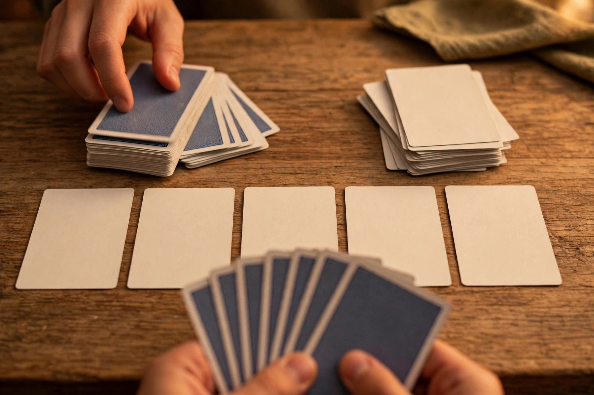

Deck-building games, explained

Deck-building games ask you to do something unusual: start with a deliberately weak deck, and build a better one while the game is already running. Every card you acquire is a decision about what your future turns should feel like, and every card you decline is a decision too. It is one of the most satisfying mechanics in modern board gaming once it clicks — and one of the most confusing to shop for, because the words on the box rarely explain what actually happens at the table. This guide walks through the loop turn by turn, verifies the specs of the game that started the genre, and gives you a diagnostic framework for the deck problems every beginner runs into.
The core loop, step by step
In most deck-building games, each player starts with a small deck of low-value cards. Each turn, the player draws cards from their own deck and plays them; playing cards can provide the in-game currency used to buy more cards, extra actions, the ability to draw further cards, or ways to remove unwanted cards from the deck. Bought cards do not go straight into the hand — they go to the player's discard pile. When the draw pile runs out, the discard pile is shuffled to form a new draw pile, and only then do purchases start appearing in hands. As players buy stronger cards, their decks gradually become more powerful, until an end condition — commonly exhausted supply piles or a points threshold — triggers scoring, where victory points held inside the decks themselves are counted.
That shuffle delay is the mechanic's quiet genius. A card bought early cannot help until it cycles through the discard pile and survives a shuffle, so buying is always an investment in future turns rather than an instant reward. It also means deck size is a real cost: every weak card still in the deck dilutes the chance of drawing the strong cards bought later. Skilled deck-building is therefore as much about what you remove and refuse as what you acquire — a lesson most new players learn one clogged hand at a time.
What deck-building is not
Two neighbouring categories cause most of the confusion. In collectible card games, cards are sold in randomized packs and the majority of the deck is built before the game begins; deck-building games invert both halves of that — the cards are not sold in randomized packs, and the majority of the deck is built during the game instead of before it. In pre-constructed deck games, everyone likewise arrives with a finished deck. The practical buying implication is large: a deck-building game is complete and self-contained in the box in a way a collectible game deliberately is not, and the skill being tested is in-game adaptation to the cards on offer, not homework done before game night. A close cousin worth knowing by name: if a game uses similar mechanics without cards, it is frequently called a pool-building game.
Spec verification: the game that started the genre
Dominion is the genre's origin point — its publisher, Rio Grande Games, describes it as the game that started a new genre, and lists the base game as a deck-building game for 2 to 4 players lasting under 30 minutes, designed by Donald X. Vaccarino, with a listed MSRP of $44.95 at the time of checking. The publisher also notes it won the Spiel des Jahres in 2009. Inside the box, the starting position is famously humble: the deck begins as a small collection of Estates and Copper cards, and the standard starting hand composition is 7 Copper cards and 3 Estate cards. Those dry facts explain the game's enduring teaching power — everyone starts identically, so every difference between decks at the end is a visible record of the choices made during play.
Checking publisher specs before buying any deck-builder is a habit worth building. Player count and stated length vary more across this category than the similar-looking boxes suggest, and the official product page — not a marketplace listing — is where expansions, current editions, and whether a title is standalone or requires a base game are stated reliably. Two minutes on the publisher page prevents the classic mistake of buying an expansion as a first game.
Deck-building versus its neighbours
| Category | When is the deck built? | How are cards obtained? | What skill is tested? |
|---|---|---|---|
| Deck-building | During the game | Bought from a shared central supply into your discard pile | Adapting to the available supply; timing purchases against the shuffle |
| Collectible card game | Before the game | Randomized packs, outside the game | Pre-game construction and collection knowledge |
| Pool-building | During the game | Same loop, but the pieces are not cards | Same adaptive skill, different components |
The table is also a shopping filter. If the fun you want is tinkering between sessions, deck-building will frustrate you, because the deck resets every game. If the fun you want is watching a plan assemble itself live, from identical starts, against opponents doing the same — this is the category built exactly for that feeling. Cooperative variants exist as well: Aeon's End is a widely cited cooperative deck-building example, proof that the loop works against a game system as happily as against other players.
A diagnostic framework for a deck that feels broken
Beginners usually conclude their deck is broken when hands feel weak. Run these checks in order before blaming luck. Check one — bloat: count how many starting cards are still in the deck late in the game. If most are, the deck's average card quality never rose, no matter how good the purchases were; the fix in future games is buying removal effects earlier, not buying more power. Check two — timing: purchases made in the final third of a game may cycle only once or never; if a post-game review shows several bought cards were never drawn, the deck was fine and the buying was simply too late. Check three — currency balance: hands full of actions with nothing to buy, or money with no actions to spend it through, signal a lopsided supply strategy rather than bad shuffles. Check four — victory-point drag: points cards typically do nothing during play, so buying them early actively weakens every subsequent hand; decks that stall mid-game usually bought points too soon. Each check points at a different fix, which is the point of diagnosing instead of just reshuffling and hoping.
Choosing your first deck-builder
Decide three things. First, interaction: some deck-builders are largely parallel puzzles with little direct conflict, while others include attack effects; neither is better, but groups differ sharply in which they enjoy, and the box copy usually signals it. Second, complexity of the supply: a fixed, visible supply rewards planning and rematch learning, while a rotating market rewards improvisation — new groups generally learn faster with the visible kind. Third, session shape: verify the stated player count and length on the publisher page, and prefer a game whose stated length your group can play twice in one sitting, because deck-building teaches through rematches more than through any explanation. This topic does not suit a numbered how-to procedure — there is no device to fix or setting to configure — so the diagnostic framework above stands in its place: it is the repeatable routine to run whenever a session feels off.
Common questions
Do I need expansions to enjoy a deck-builder? For the genre's anchor title, the publisher's own position is to start with the basic game, noting there are millions of different combinations playable with the base game alone. Treat expansions as variety for a group that already plays often, not as a completion requirement.
Why did a card bought early take so long to appear? Because purchases enter the discard pile and only reach your hand after the draw pile empties and a shuffle occurs — the delay is a designed tempo cost, described in every serious explainer of the loop.
Is deck-building the same as drafting? No. Drafting divides a shared set of cards between players before or during play, but drafted cards usually go straight into use; deck-building routes acquisitions through a discard pile and a personal deck that cycles repeatedly. The shuffle-and-cycle step is the dividing line.
Master the loop — draw, play, buy into the discard, shuffle, repeat — and the whole category opens up. Every deck-builder since 2008 is a variation on that rhythm, and the players who enjoy them most are the ones who stopped asking how to get stronger cards and started asking when a card deserves to enter the deck at all.